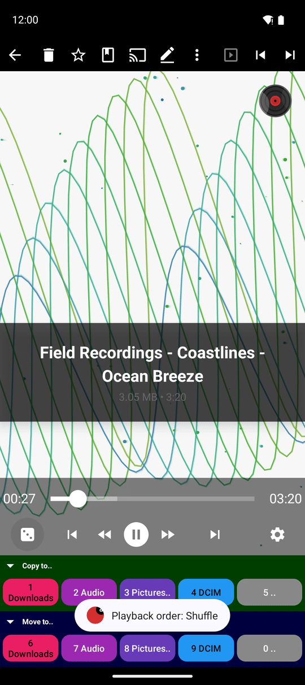
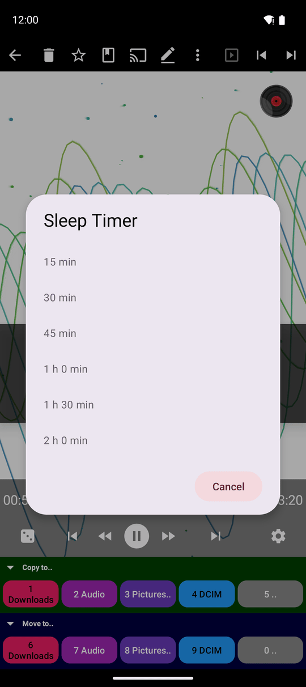
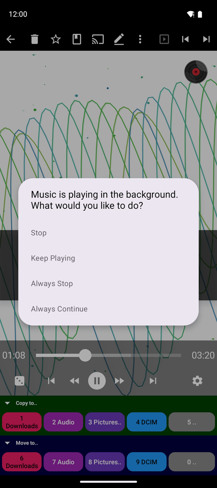
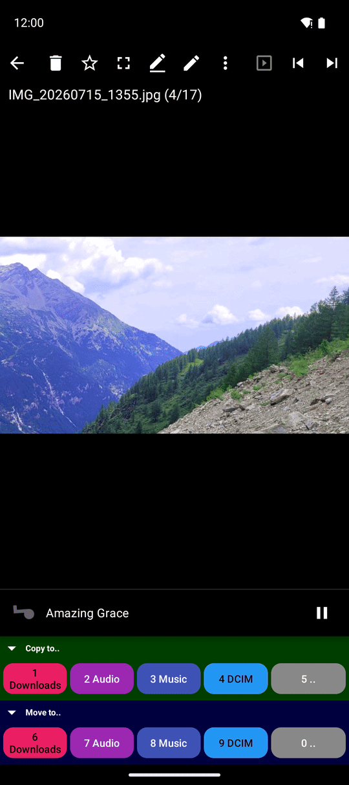

Все редакции, кроме Photos; фоновое прослушивание недоступно в Lite
Порядок воспроизведения, таймер сна и фоновое прослушивание
Выбирайте порядок воспроизведения треков, засыпайте под плавно затухающую музыку с таймером сна и продолжайте слушать любимые композиции в фоне - с удобным управлением в уведомлении, шторке настроек и нижней панели «Сейчас играет».
Почему вам это понравится
Музыка редко требует к себе непрерывного внимания: мы слушаем треки во время готовки, прогулки, чтения новостей или перед сном. Этот рецепт рассказывает обо всем, что окружает воспроизведение: в каком порядке звучат песни, как настроить автоматическое отключение музыки через полчаса и как продолжать слушать треки, переключаясь на другие дела.
Вам не нужно вручную собирать отдельные плейлисты. Очередь воспроизведения - это просто аудиофайлы из открытой папки в текущем порядке сортировки. Чтобы изменить набор треков, достаточно открыть другую папку или отсортировать текущую иначе.
- FastMediaSorter в редакции Standard, noLegal, Lite, Legacy, VR или FOSS. Редакция Photos воспроизведение аудио не поддерживает.
- Для фонового прослушивания, элементов управления в уведомлении и плитки быстрых настроек: редакции Standard, noLegal, Legacy, VR или FOSS. В редакции Lite музыка останавливается при выходе из плеера.
- Папка с аудиофайлами, открытая в аудиоплеере, как описано в руководстве Воспроизведение и упорядочивание музыки.
Выберите порядок воспроизведения
Нажмите кнопку режима повтора слева от основных кнопок управления. Каждое нажатие переключает режим на следующий, а на экране появляется подтверждающее сообщение (например, «Порядок: Случайно»):
- Повторять список - воспроизводит папку от начала до конца, затем начинает заново.
- Воспроизвести все - воспроизводит папку один раз и останавливается в конце.
- Случайно - перемешивает треки в папке и воспроизводит их в случайном порядке.
- Повтор одного - зацикливает текущую композицию.
После режима Повтор одного следующее нажатие возвращает плеер к режиму Повторять список.

Засыпайте под музыку с таймером сна
Откройте меню с тремя точками и нажмите Таймер сна. Выберите интервал: 15, 30, 45, 60, 90 или 120 минут. В плеере появится компактный значок с оставшимся временем (например, «25м» или «1ч 10м»).
Когда время истечет, музыка не оборвется резко: громкость будет мягко затухать в течение десяти секунд, после чего воспроизведение встанет на паузу. Чтобы отменить активный таймер, откройте диалог Таймер сна повторно и выберите Выключить.

Продолжайте слушать музыку в фоне
Нажмите кнопку «Назад» во время воспроизведения трека, чтобы выйти из плеера. При первом таком выходе приложение спросит: «Музыка играет в фоновом режиме. Что вы хотите сделать?» - нажмите Продолжить воспроизведение или Остановить. В этом же окне доступны варианты Всегда продолжать и Всегда останавливать, чтобы диалог больше не появлялся.
Вы всегда можете изменить этот выбор позже в разделе Настройки, вкладка Плеер: пункт При выходе из плеера или трансляций предлагает варианты Спрашивать каждый раз (по умолчанию), Всегда останавливать и Всегда продолжать.

Управляйте музыкой из любого места
Пока музыка играет в фоне, вам доступны удобные способы управления:
- Панель «Сейчас играет» - компактная полоса внизу других экранов приложения (например, во время просмотра фотографий). На ней показаны название трека и его обложка; если обложки нет, отображается плавно вращающаяся нота, которая останавливается на паузе. Нажмите на панель, чтобы открыть экран Сейчас играет с полным набором кнопок. Панель можно отключить параметром Показывать панель «Сейчас играет» в Настройках на вкладке Плеер.
- Уведомление в шторке - потяните шторку уведомлений Android вниз, чтобы увидеть название трека и кнопки воспроизведения, паузы и переключения. Эти же элементы отображаются на экране блокировки и управляются с Bluetooth-гарнитур.
- Плитка быстрых настроек - добавьте плитку Аудио FMS в панель быстрых настроек Android (потяните шторку дважды, нажмите значок карандаша и перетащите плитку). Одно нажатие ставит на паузу или возобновляет звук, а если ничего не играет - запускает воспроизведение.

Входящие звонки и другие приложения
При входящем звонке или если другое приложение начинает воспроизводить звук, FastMediaSorter мгновенно ставит музыку на паузу. После завершения разговора воспроизведение не начнется самопроизвольно - нажмите «Play», когда будете готовы продолжить. Если другое мультимедийное приложение полностью перехватывает аудиофокус, плеер завершает работу.
Управление на часах Wear OS
В приложении для часов есть собственный аудиоплеер. Текущий уровень громкости всегда отображается в виде вертикальной полосы вдоль левого края экрана: она становится ярче при вращении безеля и плавно затухает после настройки. В меню Действия пункт режима воспроизведения при каждом нажатии переключает режимы: Последовательное воспроизведение, Случайное воспроизведение и Повтор по кругу без закрытия меню. Подробнее в руководстве Музыка на часах.
Круглый экран Wear OS, плеер воспроизводит трек, шкала громкости подсвечена после поворота безеля.
Что вы получите
Треки воспроизводятся в желаемом порядке, музыка плавно затухает перед сном, и вы можете свободно переключаться на другие приложения, отвечать на звонки и управлять воспроизведением через уведомления, нижнюю панель, плитку быстрых настроек или смарт-часы.
Советы и решение проблем
- Нужна определенная подборка песен? Соберите их в одну папку (или скопируйте с помощью команды Копировать в..) и откройте ее в плеере. Сортируйте по имени для настройки очередности.
- Музыка останавливается при выходе из плеера? Проверьте пункт При выходе из плеера или трансляций в разделе «Настройки», вкладка «Плеер». В редакции Lite фоновое воспроизведение недоступно.
- Музыка не продолжила играть после телефонного разговора? Это сделано специально - просто нажмите кнопку воспроизведения. Это защищает от неожиданного громкого звука в неподходящий момент.
- Плейлисты интернет-радиостанций настраиваются отдельно - смотрите рецепт Собственные M3U-плейлисты.